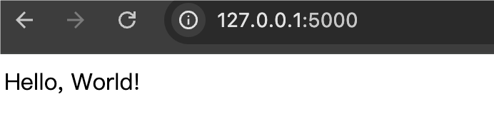
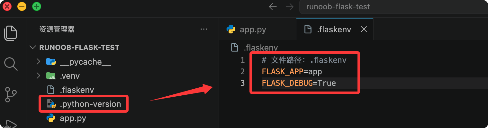

First Flask Application
In the previous chapter, we successfully installed Flask. Next, we can create a simple Flask application.
First, create a file named app.py and add the following content:
Example ( app.py )
app = Flask(__name__)
@app.route('/')
def hello_world():
return 'Hello, World!'
if __name__ == '__main__':
app.run(debug=True)
Run the Flask application from the command line:
python app.py
You will see the Flask development server start and display something like the following:
... * Running on http://127.0.0.1:5000 Press CTRL+C to quit * Restarting with stat * Debugger is active! * Debugger PIN: 977-918-914 ...
Open the browser, visit http://127.0.0.1:5000/, you should see the message "Hello, World!", indicating that Flask has been successfully installed and running.

Never name the fileflask.py, this will conflict with the Flask library itself and cause an import error.
Code Analysis:
-
from flask import Flask: This line of code from
flaskimported from the moduleFlaskclass.FlaskThe class is the core of the Flask framework, used to create Flask application instances. -
app = Flask(__name__): This line of code creates a Flask application instance.
__name__is a special Python variable, which when the module is run directly is'__main__', when imported by other modules, is the module's name. Passing__name__GiveFlaskThe constructor allows the Flask application to find and load configuration files. -
@app.route('/'): This is a decorator that tells Flask which URL should trigger the function below. In this example, it specifies the root URL (i.e., the homepage of the website).
-
def hello_world():: This defines a function named
hello_worldThe function that will be called when the user visits the root URL. -
return 'Hello, World!': This line of code is
hello_worldThe return value of the function. When the user visits the root URL, this string will be sent back to the user's browser. -
if __name__ == '__main__':: This line of code is a conditional check to see whether this module is run directly, rather than imported by other modules. If it is run directly, the following code block will be executed.
-
app.run(debug=True): This line of code calls the Flask application instance's
runmethod, starts Flask's built-in development server.debug=Trueparameter enables debug mode, which means the application will automatically reload when the code changes, and provides a debugger when an error occurs.
If you have installedpython-dotenv, you can create in the project directory.flaskenvfile, simplifying the command:
# 文件路径：.flaskenv FLASK_APP=app FLASK_DEBUG=True

After configuration, directly runflask runthat's all, no need to specify every time--appParameters:
(.venv) $ flask run * Serving Flask app 'app' * Debug mode: on * Running on http://127.0.0.1:5000 (Press CTRL+C to quit)
If you name the fileapp.pyorwsgi.py, Flask can automatically discover it, and even--appcan be omitted. But explicitly specifying it is a good habit.
Debug Mode
During development, it is recommended to enable Debug mode, which provides two important features:
- Auto Reload: After you modify the code and save, the server automatically restarts, no manual operation needed.
- Interactive Debugger: When an error occurs in the code, detailed error information and a call stack are displayed in the browser.
How to enable:
(.venv) $ flask --app app run --debug * Debug mode: on * Restarting with stat * Debugger is active! * Debugger PIN: 123-456-789
Security Warning: The interactive debugger in Debug mode allows arbitrary Python code to be executed in the browser. Although it is protected by a PIN code,Never enable Debug mode in a production environment。
Comparison of running methods
exceptflask runcommand, you will also see another way to run:
Example
if __name__ == "__main__":
app.run(debug=True)
Then usepython app.pyRun.
| How to run | Advantages | Disadvantages |
|---|---|---|
| flask run | Supports command-line arguments (--host, --port, --debug) with flexible configuration; automatically loads .flaskenv | Need to remember command parameters |
| python app.py | Simple and intuitive | Inflexible, debug mode requires changing code; Flask officially does not recommend |
Flask officially recommends usingflask runcommand. If you write in the codeapp.run()while also usingflask run, Flask will intelligently ignoreapp.run()call and display a yellow-text warning.
Add more content to the response
View functions can return not only simple strings but also HTML content:
Example
from flask import Flask
app = Flask(__name__)
@app.route("/")
def index():
# Returns multi-line HTML, Flask automatically sets Content-Type to text/html
return """
<h1>Welcome to EXAMPLE Flask Tutorial</h1>
<p>This is a web application built with Flask.</p>
<ul>
<li>Learn the routing system</li>
<li>Learn template rendering</li>
<li>Learn database operations</li>
</ul>
"""
Visit http://127.0.0.1:5000/, the output is as follows:

Of course, writing HTML directly in Python code will quickly become difficult to maintain. In later chapters, we will introduce how to use templates to separate HTML from Python code.
other extensions